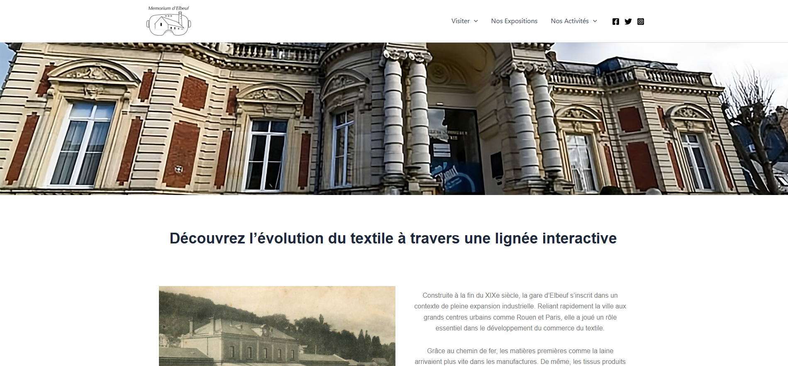
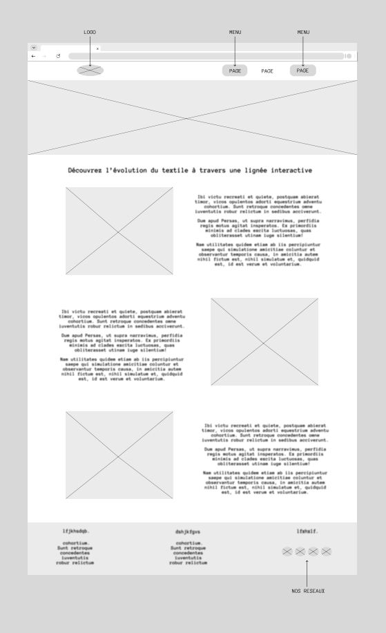

Je suis étudiant à l'université de Elbeuf dans une formation BUT MMI (Métiers du Multimédia et de l'Internet). Ici vous pourrez retrouver l'ensemble de mes projets.

Je suis étudiant à l'université de Elbeuf dans une formation BUT MMI (Métiers du Multimédia et de l'Internet). Ici vous pourrez retrouver l'ensemble de mes projets.
Cette SAE est la dernière SAE de ma 1ère année en BUT MMI. Elle regroupe la totalité des ressources
travaillées dans l'année.
L'objectif final était de concevoir un Musée qui regroupe et parle du patrimoine textile
d'Elbeuf.
Pour cela il a fallut construire une charte graphique complète avec logo, univers graphique etc..
Une communication regroupant la stratégie, le public cible, les moyens de communications utilisées.
Une partie audiovisuel qui comportait la photographie utilisé pour les autres parties du projet et la
vidéo pour un teaser du Musée.
Et pour finir un CMS sur WordPress qui sert à informer et communiquer sur le Musée d'Elbeuf.
Logo confectionné par moi
Logo final utilisé pour la SAE

Étant donné que je me suis occupé particulièrement du CMS de la SAE je vous présente celui-ci mais n'hésitez pas à aller voir le CMS car il contient des photographies dont j'ai pu participé.
 